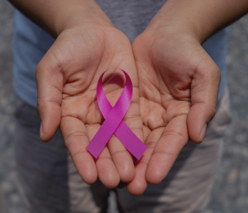

|

|
Criação da campanhaO Agosto Lilás foi criado em alusão ao dia 7 de agosto de 2006, data em que foi sancionada a Lei
Maria da Penha (Lei nº 11.340/2006) — um dos marcos legais mais importantes do país no enfrentamento à violência doméstica e
familiar contra a mulher. Desde então, estados e municípios passaram a reconhecer agosto como o mês de referência para ações
voltadas à prevenção e ao combate dessa violência. Apesar da existência de leis protetivas, os índices de violência contra
a mulher seguem alarmantes no Brasil. A cada ano, milhares de mulheres são vítimas de agressões físicas, psicológicas, sexuais
e até fatais. A campanha surgiu da necessidade de romper com o silêncio, informar a população sobre seus direitos e incentivar
a denúncia e o acolhimento das vítimas.
|
|
|
Como a campanha acontece na práticaA campanha é realizada por uma articulação entre órgãos públicos, instituições da
sociedade civil, entidades de direitos humanos, escolas, universidades, empresas e movimentos sociais. Cada um desses agentes
contribui com ações, eventos, materiais educativos, serviços e mobilizações, ampliando o alcance e a efetividade da campanha
em nível nacional. Durante o mês de agosto, a campanha se manifesta por meio de palestras, rodas de conversa, campanhas nas
redes sociais, capacitações profissionais, distribuição de cartilhas informativas, iluminação de prédios públicos na cor
lilás e ações em escolas, comunidades e espaços institucionais. Cada ação tem como objetivo informar, acolher, orientar e
sensibilizar diferentes públicos sobre a importância do enfrentamento à violência contra a mulher.
|
|
|
O que a campanha defende e qual a sua importânciaO Agosto Lilás defende o fim de todas as formas de violência contra
a mulher, a igualdade de gênero, o direito das mulheres à segurança e dignidade, além da responsabilização dos agressores.
A campanha também promove o fortalecimento de políticas públicas, a educação para a prevenção e o acesso a uma rede de apoio
estruturada e acolhedora. O Agosto Lilás é essencial para ampliar o conhecimento da sociedade, reduzir a subnotificação,
incentivar denúncias, formar profissionais qualificados e dar visibilidade a um problema muitas vezes invisível ou naturalizado.
Ao promover o debate e a educação, a campanha contribui para a construção de uma cultura de respeito, equidade e não violência.
Mais do que um mês de atenção, o Agosto Lilás é um chamado à ação permanente.
|